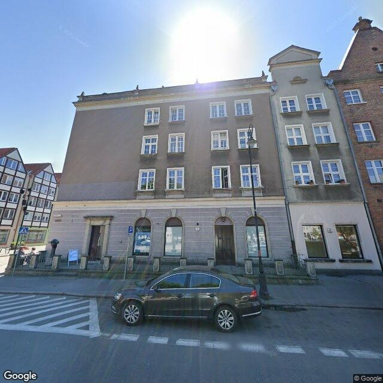
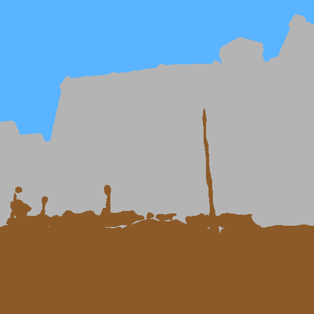
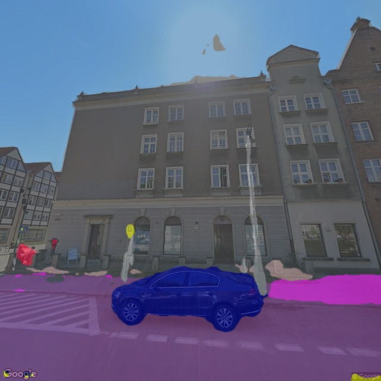
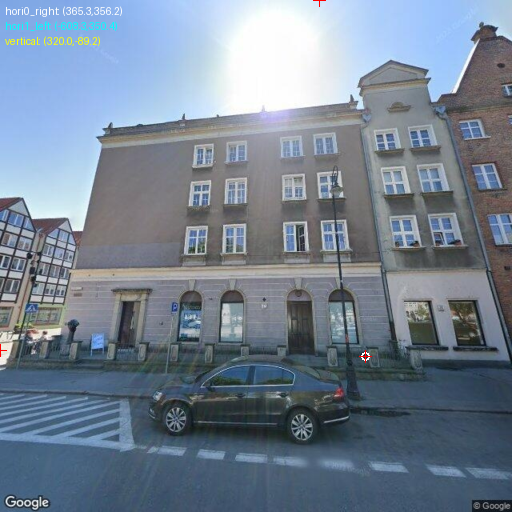
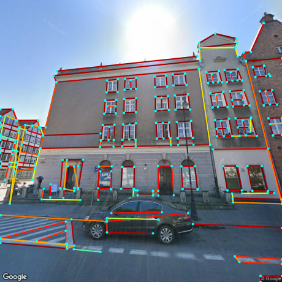
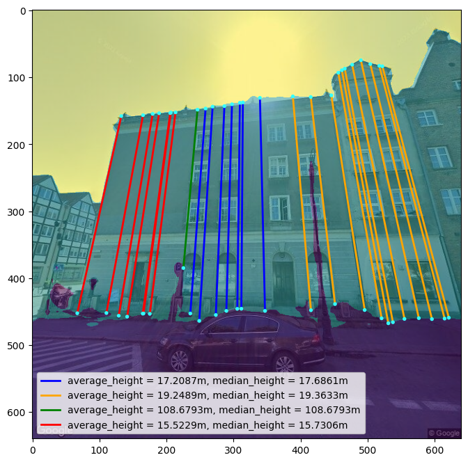
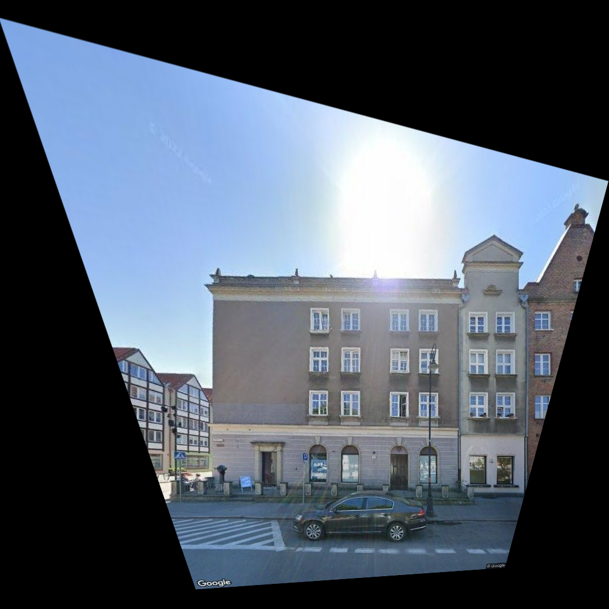

Estimating building façade dimensions from street-view imagery using computer vision to support urban flood resilience.
Let's see how façade geometry is estimated from street images.
We start by selecting a building in Gdańsk.
Example building: Szeroka Street

Street-view image used for analysis

Façade extracted using deep learning segmentation

Segmentation mask overlaid on the original building image

Perspective geometry is detected

Structural edges are identified

Building height is computed using image geometry

Perspective distortion is removed
Façade dimensions and total area are estimated
Façades represent potential for vertical green infrastructure